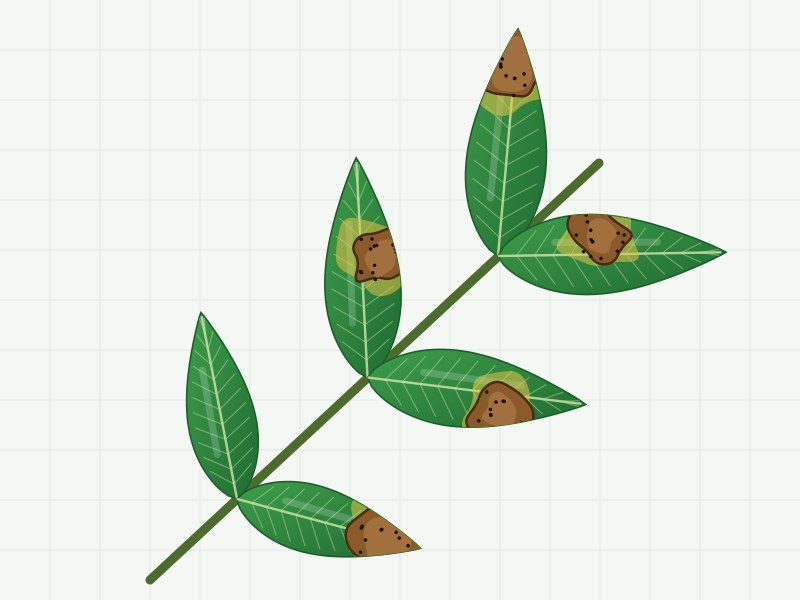
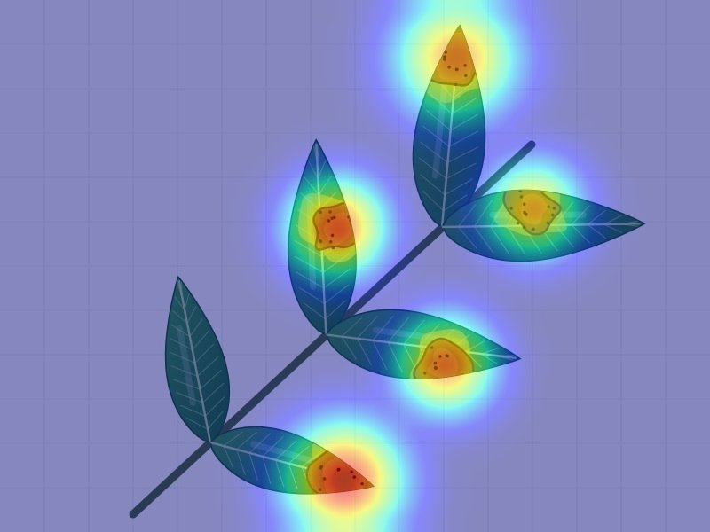

Chụp một lá vải. Biết ngay cây đang mắc bệnh gì.
LEAF_AI nhận diện bệnh hại trên lá vải thiều Lục Ngạn, chỉ ra vùng lá mà AI dựa vào để kết luận và gợi ý cách xử lý bắt đầu từ canh tác, sinh học. Thuốc hóa học chỉ là bước cuối.


Vùng AI dựa vào (Grad-CAM)Quy trình 3 bước nhanh chóng
Nhận diện chính xác ngay dưới tán vải thiều — tiện lợi trên điện thoại di động và máy tính.
Chụp ảnh lá vải
Chụp cận cảnh lá có đốm bệnh bằng camera hoặc tải ảnh sẵn có trong máy.
AI phân tích & Grad-CAM
Mô hình ResNet-18 chẩn đoán bệnh và tô vùng tổn thương bằng bản đồ nhiệt trực quan.
Phác đồ điều trị IPM
Xem lịch trình xử lý cụ thể theo từng giai đoạn, ưu tiên sinh học trước hóa học.
Bảo vệ quả vải, giảm thuốc hóa học
Quản lý dịch hại tổng hợp (IPM) giúp bảo vệ hệ sinh thái vườn vải Lục Ngạn. Phát hiện sớm giúp nhà nông xử lý bằng biện pháp canh tác và chế phẩm sinh học an toàn, đáp ứng tiêu chuẩn xuất khẩu.
Bộ công cụ chuyên biệt cho vườn vải
Thiết kế tinh gọn, dễ dàng thao tác ngay tại vườn.
Kỹ sư AI tư vấn
Hỏi đáp trực tiếp về liều lượng thuốc, thời gian cách ly và kỹ thuật vải.
Trò chuyện →Thấy lá vải lạ trong vườn?
Chụp ngay khi vết bệnh còn nhỏ, nhất là trên các đợt lộc non. Phát hiện ở giai đoạn 1 giúp xử lý dễ nhất và tốn ít thuốc nhất.